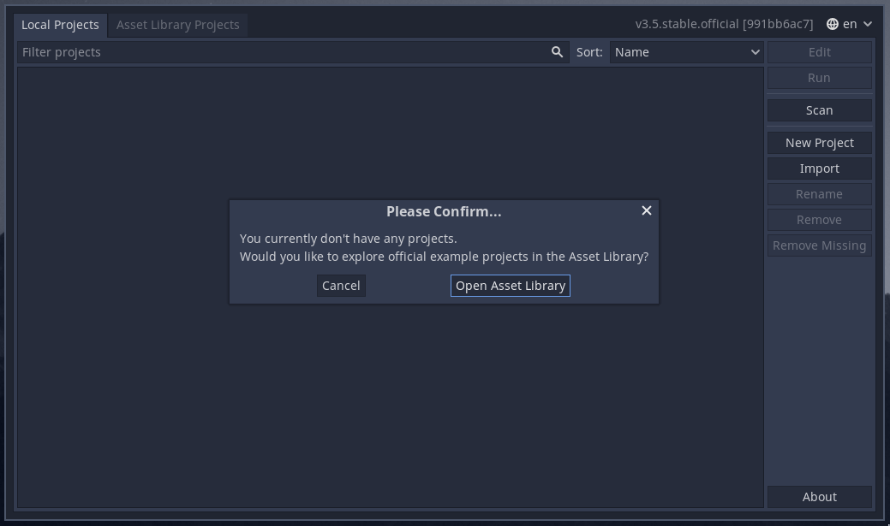

Instalando a Godot
Para realizar qualquer mudança no projeto, é necessário possuir o executável da Godot Engine no seu computador. Modficar o código fonte manualmente é fortemente não recomendado.
O projeto foi feito com a versão 3.5-stable da engine, que não necessariamente é a versão mais atual.
Para baixar o executável da Godot nessa versão específica, é possível acessar este link. Como a Godot roda em várias plataformas, há vários arquivos para baixar neste link, mas os mais importantes são:
Godot_v3.5-stable_x11.32.zippara Linux 32 bitsGodot_v3.5-stable_x11.64.zippara Linux 64 bitsGodot_v3.5-stable_win32.exe.zippara Windows 32 bitsGodot_v3.5-stable_win64.exe.zippara Windows 64 bitsGodot_v3.5-stable_osx.universal.zippara OSX (MacOS)
Com qualquer um desses executáveis no sistema operacional correspondente é possível exportar para qualquer plataforma. Não é necessário rodar a Godot numa plataforma específica para exportar para ela.
Os arquivos .zip contém um executável para a plataformam específica, e, após extrair, pode ser executado normalmente. A tela que se abrirá será esta:
